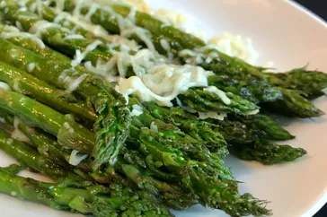

Roasted-Asparagus with parmasan

Roasted asparagus with shredded parmasan cheese
Fresh asparagus spears are simply seasoned with garlic,
topped with shredded Parmesan cheese, and baked until
tender and sweet in this easy spring side dish.
Ingredients
- olive oil cooking spray
- 1 pound fresh asparagus,tough end trimmed
- 1/4 cup shredded Parmasan cheese
- 1 teaspoon sea salt
- 1/4 teaspoon garlic powder,or to taste